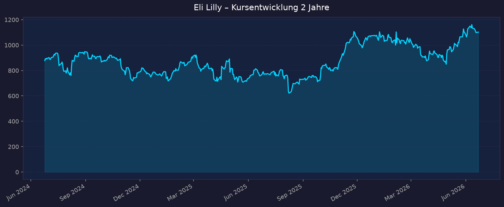
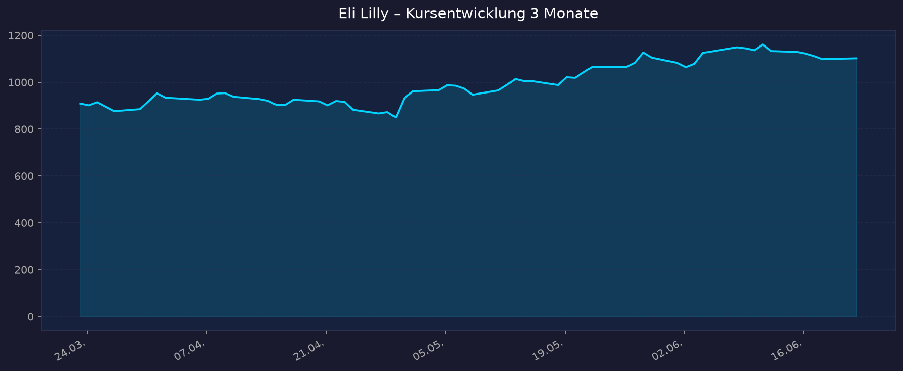

Börse: NYSE (USD) · GICS-Sektor: Health Care · TradingView
📈 1. Kursentwicklung
Aktueller Kurs: 1.102,08 USD | Veränderung heute: +0,3 % (Vortagesschluss 1.098,57 USD)
Eli Lilly notiert nahe dem Allzeithoch. Das 52-Wochen-Hoch (1.182,73 USD) liegt nur rund 7 % über dem aktuellen Kurs, während das 52-Wochen-Tief (623,78 USD) zeigt, dass sich die Aktie binnen eines Jahres nahezu verdoppelt hat. Marktkapitalisierung: ~983 Mrd. USD (knapp unter der Billionen-Grenze).
Chart – 2 Jahre

Chart – 3 Monate

| Zeitraum | Kurs Start | Kurs Ende | Veränderung |
|---|---|---|---|
| 2 Jahre | ~575 USD | 1.102,08 USD | ca. +92 % |
| 3 Monate | ~835 USD | 1.102,08 USD | ca. +32 % |
| 52-Wochen-Hoch | — | 1.182,73 USD | — |
| 52-Wochen-Tief | — | 623,78 USD | — |
Start-Werte 2J/3M aus dem lokal generierten Chart abgeleitet (Schlusskurse, dividendenbereinigt). 52W-Werte: yfinance/CNBC.
💹 2. KGV-Entwicklung (Kurs-Gewinn-Verhältnis)
Aktuelles KGV (trailing): 39,2 | Forward-KGV (2026e): ~24,8
| Zeitraum | KGV | Einordnung |
|---|---|---|
| Aktuell (trailing) | 39,2 | Deutlich unter eigenem historischen Schnitt |
| Forward (2026e) | ~24,8 | Günstig relativ zum Wachstum (PEG < 1 bei >50 % EPS-Wachstum) |
| Ende 2025 | 46,7 | — |
| Ø letzte 12 Monate | ~50,9 | — |
| Ø letzte 3 Jahre | ~81,4 | Sehr hohe Bewertung in der GLP-1-Hype-Phase |
| Ø letzte 10 Jahre | ~52,2 | — |
Bewertung: Das aktuelle KGV von 39 liegt rund 24 % unter dem 10-Jahres-Schnitt (52) und massiv unter dem 3-Jahres-Schnitt (81). Trotz Kursnähe am ATH ist die Aktie über das Gewinnwachstum „hineingewachsen" – das Forward-KGV von ~25 ist für ein Unternehmen mit >50 % Umsatzwachstum historisch eher günstig. Die Ausgangs-These (Fwd-KGV ~29) liegt sogar leicht zu hoch; aktuelle Konsens-Schätzungen deuten eher auf ~25.
💰 3. Sales Multiple (Kurs-Umsatz-Verhältnis / P/S)
Aktuelles P/S-Verhältnis (TTM): 13,6
| Zeitraum | P/S Ratio | Einordnung |
|---|---|---|
| Aktuell (TTM, yfinance) | 13,6 | Hoch, aber rückläufig dank Umsatzexplosion |
| Ende 2025 | ~10,9 | — |
| vor 12 Monaten | ~14–18 (geschätzt) | exakter Wert nicht verfügbar |
| vor 24 Monaten | ~18–20 (geschätzt) | Höhepunkt der GLP-1-Bewertung |
Trend: Fallend bzw. stabilisierend. Während der Kurs steigt, wächst der Umsatz noch schneller (FY2026-Guidance 82–85 Mrd. USD vs. ~45 Mrd. in 2024 → fast Verdopplung in zwei Jahren). Dadurch sinkt das P/S trotz hoher Kurse. Das ist fundamental gesünder als ein P/S, das allein durch Kursanstieg getrieben wird. Hinweis: Einzelne Quellen (companiesmarketcap) nennen ein TTM-P/S von ~41 – das erscheint inkonsistent mit Umsatz ~58 Mrd. TTM und MarketCap ~983 Mrd. (= ~13,6) und wird daher nicht übernommen.
📊 4. Handelsvolumen (Trading Volume)
| Zeitraum | Ø Tagesvolumen | Auffälligkeiten |
|---|---|---|
| 3-Monats-Durchschnitt | ~3,18 Mio. Aktien | stabil |
| 10-Tage-Durchschnitt | ~3,15 Mio. Aktien | leicht unter 3M-Schnitt |
| 2-Jahres-Durchschnitt | nicht exakt verfügbar (~3–4 Mio.) | — |
| Volumen-Peaks | erhöht an Earnings-Tagen | Q4-2025-Bericht (Anfang Feb. 2026, +9,6 % Kursreaktion); ATTAIN-Studiendaten; Medicare-Deal-Ankündigungen |
Volumentrend: Das Volumen ist für eine Mega-Cap unauffällig und stabil. Spitzen treten erwartbar an Quartals- und Pipeline-Ereignissen auf. Keine Anzeichen panikartiger Ab- oder Zuflüsse.
🏦 5. Insider Trades (letzte 2 Jahre)
| Datum | Name | Funktion | Kauf/Verkauf | Anzahl Aktien | Wert (USD) |
|---|---|---|---|---|---|
| 07.01.2026 | Carole Ho | EVP & Präs. Neuroscience | Verkauf | 4.652 | ~5,18 Mio. |
| 06.–07.01.2026 | Lilly Endowment Inc. | Großaktionär (Stiftung) | Verkauf | mehrere Tsd. (Tranchen) | zweistellige Mio. |
| 31.12.2025 | Mary Lynne Hedley | Direktorin | Verkauf | 2.741 | ~2,94 Mio. |
| 29.12.2025 | Lilly Endowment Inc. | Großaktionär | Verkauf | 240 | ~0,26 Mio. |
| 17.11.2025 | Katherine Baicker | Direktorin | Kauf | 215 | ~0,22 Mio. |
| 17.11.2025 | Kimberly H. Johnson | Direktorin | Kauf | 215 | ~0,22 Mio. |
| 17.–19.02.2026 | diverse | — | Stock Awards (4×) | — | ~0,04 Mio. |
3-Monats-Überblick: Klare Netto-Verkäufe – über 330 Mio. USD an Verkäufen in 35 Transaktionen in den letzten ~90 Tagen, überwiegend von der Lilly Endowment (Stiftung) und einzelnen Führungskräften. Käufe nur in kleinem Umfang (Direktoren). 2-Jahres-Überblick: Überwiegend Verkäufe. Das ist bei einer Aktie nach Verdopplung und bei einer steuerlich/diversifikationsgetriebenen Stiftung als Großaktionär typisch und kein starkes Bärsignal – jedoch gab es keine nennenswerten Insider-Großkäufe, die Überzeugung signalisieren würden.
Quelle: OpenInsider / SEC Edgar Form 4 / Benzinga / GuruFocus
🩳 6. Short-Positionen
Aktuelle Short Quote: 1,04 % des Streubesitzes (Float) | Short Interest: 9,80 Mio. Aktien | Days-to-Cover: ~3,0
| Zeitraum | Short Shares | Short % Float | Veränderung |
|---|---|---|---|
| 29.05.2026 | 9,80 Mio. | 1,04 % | +16,2 % |
| 15.05.2026 | 8,43 Mio. | 0,9 % | +7,2 % |
| 30.04.2026 | 7,86 Mio. | 0,8 % | −3,1 % |
| 31.03.2026 | 7,70 Mio. | 0,8 % | +12,1 % |
Einschätzung: Niedrig. Mit ~1 % des Float ist die Short-Quote für eine Mega-Cap normal bis sehr niedrig. Zwar ist das Short Interest seit Ende April um ~25 % gestiegen (einzelne Marktteilnehmer wetten auf eine Bewertungs-/Konkurrenzkorrektur), aber das absolute Niveau bleibt unkritisch. Kein nennenswertes Short-Squeeze- oder Crowded-Short-Risiko.
Quelle: MarketBeat / Finviz
🗞️ 7. Aktuelle Nachrichten
| Datum | Quelle | Nachricht | Relevanz |
|---|---|---|---|
| ~22.06.2026 | CNBC / Public | 20 Analysten mit „Buy/Strong Buy"; Konsens-Kursziele ~1.164–1.289 USD | Hoch |
| Ende Mai 2026 | PR Newswire | Alle 3 großen PBMs (CVS Caremark, Express Scripts, OptumRx) decken Lillys komplettes Adipositas-Portfolio ab; Foundayo-Coverage ab 01.06. | Hoch |
| ~Mai 2026 | CMS | Medicare GLP-1 Bridge: ab 01.07.2026 GLP-1 gegen Adipositas für 50 USD/Monat (bis Ende 2027 verlängert) | Hoch |
| 01.04.2026 | Lilly / FDA | FDA-Zulassung von Foundayo (Orforglipron) – erste orale GLP-1-Pille gegen Adipositas, tageszeitunabhängig ohne Nahrungs-/Wasserrestriktion | Hoch |
| Q1 2026 (Apr.) | Investor.lilly | Q1-2026-Zahlen: Umsatz +56 % auf 19,8 Mrd. USD; Guidance angehoben | Hoch |
| lfd. 2026 | Lilly / NEJM | ATTAIN-1/-2/-3 Phase-3-Daten zu Orforglipron erfolgreich; globale Zulassungsanträge | Hoch |
| Okt. 2025 | Lilly/US-Regierung | Deal: Zepbound & Orforglipron für 245 USD/Monat in Medicare/Medicaid, Patient zahlt 50 USD | Hoch |
| 2025 | CMS/IRA | Semaglutid (Novo) für IRA-Preisverhandlung gewählt – Verhandlungspreis ab 2027 (Wettbewerbskontext) | Mittel |
| Q4 2025 (Feb. 2026) | Investing.com | Q4-2025 über Erwartung, Aktie +9,6 % | Mittel |
| Apr. 2026 | STAT News | Versicherer zögern bei Medicare-Pilot (Pushback) – Umsetzungsrisiko | Mittel |
Sentiment: Überwiegend positiv. Die Nachrichtenlage wird dominiert von der Orforglipron-Zulassung (oraler GLP-1-Gamechanger), starkem Umsatzwachstum, breiter PBM-Abdeckung und der bestätigten Medicare-Erstattung ab 1.7.2026. Dämpfer: Preiszugeständnisse (245 USD/Monat) und Versicherer-Pushback beim Medicare-Pilot.
📋 8. Letzte 3 Quartalsberichte
Q1 2026 (Bericht April 2026)
| Kennzahl | Ist | Erwartung | Abweichung |
|---|---|---|---|
| Umsatz (Revenue) | 19,8 Mrd. USD | 17,6 Mrd. USD | +12,5 % (Beat) |
| EPS (non-GAAP) | 8,55 USD | 6,97 USD | +22,7 % (Beat) |
| EPS (GAAP) | 8,26 USD | — | +170 % YoY |
| Nettomarge | ~ hoch (GAAP-EPS +170 %) | — | — |
| Free Cashflow | nicht exakt verfügbar | — | — |
Guidance: FY2026 angehoben auf 82–85 Mrd. USD Umsatz, non-GAAP-EPS 35,50–37,00 USD. Mounjaro+Zepbound: 12,8 Mrd. USD kombiniert (+6,7 Mrd. YoY, volumengetrieben trotz niedrigerer Preise). Kursreaktion: Positiv im Umfeld der Zahlen; Aktie konsolidierte zuvor um 1.000–1.100 USD.
Q4 2025 (Bericht Anfang Februar 2026)
| Kennzahl | Ist | Erwartung | Abweichung |
|---|---|---|---|
| Umsatz (Revenue) | 19,3 Mrd. USD | 17,87 Mrd. USD | +8 % (Beat) |
| EPS | 7,54 USD | 7,20 USD | +4,7 % (Beat) |
| Nettomarge | hoch | — | — |
| Free Cashflow | nicht verfügbar | — | — |
Guidance: FY2026-Erstprognose 80–83 Mrd. USD (später auf 82–85 angehoben). Incretin-Produkte >13 Mrd. USD im Quartal. Kursreaktion: +7,88 % vorbörslich, im Verlauf bis ~+9,6 % auf ~1.100 USD.
Q3 2025 (Bericht Ende Oktober/November 2025)
| Kennzahl | Ist | Erwartung | Abweichung |
|---|---|---|---|
| Umsatz (Revenue) | 17,60 Mrd. USD | ~Konsens getroffen/übertroffen | +54 % YoY |
| EPS | 6,21 USD | — | — |
| Nettogewinn | 5,58 Mrd. USD | — | — |
| Free Cashflow | nicht verfügbar | — | — |
Guidance: Umsatzwachstum durch +62 % Volumen, teilweise kompensiert durch −10 % niedrigere realisierte Preise. Kursreaktion: Positiv im Trend des Aufwärtsmomentums Richtung Jahresende 2025.
Datenquellen Q-Berichte: Lilly Investor Relations, SEC 8-K, Investing.com, Nasdaq.
🌍 9. Marktkontext & Wettbewerb
Markt / Branche: Pharma, Schwerpunkt GLP-1-Rezeptoragonisten (Diabetes + Adipositas). Der GLP-1-Adipositas-Markt wuchs von ~8,2 Mrd. USD (2025) auf ~10,1 Mrd. USD (2026) und soll laut Precedence Research bis 2035 auf ~66,6 Mrd. USD steigen. Breitere GLP-1-Schätzungen reichen bis >130–157 Mrd. USD (2030–2035). Der Markt für orale GLP-1-Pillen wird bis 2030 auf ~22 Mrd. USD (Goldman) taxiert – hier erwartet Goldman für Lilly einen Anteil von ~60 % (Orforglipron) gegenüber ~21 % für Novos orales Semaglutid.
| Wettbewerber | Stärke | Schwäche |
|---|---|---|
| Novo Nordisk (Ozempic/Wegovy, oral Semaglutid) | Etablierte Marke, erste orale GLP-1-Adipositas-Pille (Wegovy-Pille, Jan. 2026), starke Diabetes-Basis | Verlor Momentum ggü. Lilly; Semaglutid für IRA-Verhandlung (Preisdruck ab 2027) |
| Pfizer | Große Bilanz, breites Portfolio, M&A-Feuerkraft | Oral-GLP-1-Programme mit Rückschlägen; spät dran |
| Amgen (MariTide) | Differenzierter Wirkmechanismus, monatliche Gabe möglich | Noch in Entwicklung, Daten gemischt |
| Viking Therapeutics | Vielversprechende Phase-2-Daten (oral & injizierbar) | Kleiner Player, keine Produktion/Vermarktung im Maßstab, Übernahmekandidat |
| Roche / AstraZeneca | Finanzkraft, Pipeline-Ambitionen | Deutlich hinter Lilly/Novo zurück |
Branchentrends 2026: (1) Verschiebung von injizierbaren zu oralen GLP-1 – Lillys Orforglipron (Foundayo) FDA-zugelassen ab 01.04.2026, tageszeitunabhängig. (2) Medicare-Erstattung ab 01.07.2026 (GLP-1 Bridge, 50 USD/Monat, verlängert bis Ende 2027) – Lilly-CEO Ricks: „könnte das Spiel verändern". (3) Produktions-/Kapazitätsausbau als Wettbewerbsfaktor. (4) Preisdruck durch IRA & Most-Favored-Nation-Deals (245 USD/Monat in Medicare).
Marktposition: Klar führend. Lilly gewinnt aktuell Marktanteile gegenüber Novo Nordisk – getrieben durch Tirzepatid (Mounjaro/Zepbound, dualer GIP/GLP-1-Mechanismus mit überlegenen SURMOUNT-Daten) und den Vorsprung bei oralen GLP-1 (ATTAIN-1/-2/-3 erfolgreich). Zusätzlich Diversifikation in Onkologie, Immunologie und Alzheimer (Kisunla/Donanemab).
Risiken aus dem Marktumfeld: Preisdruck durch IRA-Verhandlungen und Medicare-Deals (245 USD/Monat senkt Marge); Versicherer-Pushback beim Medicare-Pilot (Umsetzungsrisiko); intensiver Wettbewerb bei oralen Pillen; Compounding/generische Kopien; Produktionsengpässe; Nebenwirkungs-/Klagerisiken; sehr hohe Erwartungen sind im Kurs eingepreist.
📝 Gesamteinschätzung
Stärken:
- Explosives, volumengetriebenes Umsatzwachstum (Q1 2026: +56 %; FY-Guidance 82–85 Mrd. USD = nahezu Verdopplung ggü. 2024)
- Marktführerschaft im strukturellen Adipositas-Megatrend, Vorsprung bei oralen GLP-1 (Foundayo/Orforglipron)
- Bewertung trotz ATH-Nähe „hineingewachsen": Fwd-KGV ~25, deutlich unter historischem Schnitt
- Konkreter Katalysator: Medicare-Erstattung ab 01.07.2026 + breite PBM-Abdeckung
- Diversifizierte Pipeline (Onkologie, Immunologie, Alzheimer), Analysten-Konsens „Strong Buy"
Risiken:
- Preisdruck: IRA-Verhandlungen, Most-Favored-Nation-Deals (245 USD/Monat), Versicherer-Pushback
- Sehr hohe Erwartungen eingepreist – wenig Toleranz für Enttäuschungen
- Verschärfter Wettbewerb (Novo orale Pille, Amgen MariTide, Viking, Pfizer)
- Compounding/Kopien und mögliche Nebenwirkungs-/Klagerisiken
- Insider netto Verkäufer (>330 Mio. USD in 90 Tagen), keine Überzeugungskäufe
Fazit: Eli Lilly verbindet einen strukturellen Megatrend (GLP-1/Adipositas) mit außergewöhnlichem Wachstum und einer relativ – gemessen am eigenen Verlauf – moderaten Forward-Bewertung. Die Ausgangs-These bestätigt sich weitgehend: Megatrend intakt, Medicare-Erstattung ab Mitte 2026 (1.7.) fixiert, ATH-Nähe gegeben; das Fwd-KGV liegt mit ~25 sogar unter den angenommenen ~29. Das zentrale Risiko ist nicht das Wachstum, sondern der Preis- und Margendruck sowie die hohen eingepreisten Erwartungen.
🎯 Ranking-Einordnung
| Kriterium | Gewicht | Punkte (1–10) | Begründung |
|---|---|---|---|
| Umsatz-/EPS-Wachstum | 25 % | 10 | +56 % Umsatz, +156 % EPS (non-GAAP) in Q1 2026 – außergewöhnlich |
| Bewertungsraum | 25 % | 6 | Fwd-KGV ~25 ok für das Wachstum, aber ATH-Nähe & P/S 13,6 begrenzen Spielraum |
| Megatrend-Stärke | 20 % | 10 | GLP-1/Adipositas ist einer der stärksten strukturellen Trends der Pharma |
| Katalysatoren | 15 % | 9 | Medicare ab 1.7.2026, Orforglipron-Launch, PBM-Abdeckung, Pipeline-Daten |
| Risikoprofil | 15 % | 6 | Preisdruck/IRA, hohe Erwartungen, Konkurrenz – moderates Risiko |
Gewichteter Gesamt-Score:
10·0,25 + 6·0,25 + 10·0,20 + 9·0,15 + 6·0,15
= 2,50 + 1,50 + 2,00 + 1,35 + 0,90 = 8,25 → 8,3 / 10
Szenarien 2031 (5-Jahres-Horizont, Basis aktueller Kurs 1.102 USD)
| Szenario | Annahmen | Kursziel 2031 | Δ zum aktuellen Kurs |
|---|---|---|---|
| Bär | Preisdruck/IRA drückt Margen, Konkurrenz (Novo/Amgen) gewinnt orale Anteile, Wachstum normalisiert sich, Multiple-Kontraktion | ~1.000 USD | −9 % |
| Base | Umsatz wächst Richtung ~120–140 Mrd. USD bis 2031, Marktführerschaft GLP-1 hält, Multiple normalisiert auf ~22–24 | ~1.900 USD | +72 % |
| Bull | Orforglipron + Pipeline (Alzheimer/Onkologie) übertreffen, Adipositas-TAM expandiert global, Premium-Multiple hält | ~2.700 USD | +145 % |
5-Jahres-Potenzial: −9 % bis +145 % (Base ~+72 %).
00_Momentum-Aktien USA-EU-Asien – 5-Jahres-Shortlist 2026-06-23
Datenquellen: Yahoo Finance (yfinance) · CNBC · Macrotrends/Public · MarketBeat · Finviz · OpenInsider/SEC Edgar · Benzinga · GuruFocus · Lilly Investor Relations · PR Newswire · CMS · KFF · STAT News · Precedence Research · Goldman Sachs (zitiert) · Investing.com · Nasdaq Keine Anlageberatung — rein informative Auswertung öffentlicher Daten.